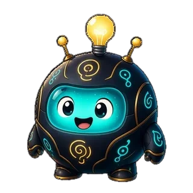
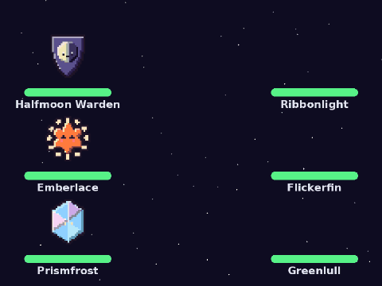

Entiende imágenes Premium
Lee las imágenes de archivos adjuntos y respuestas, así que puedes preguntar por lo que hay en pantalla.
Funciones
Starkeepers, la música, los juegos y las herramientas del servidor son gratis. El chat con IA viene con Premium.
Los paneles de abajo son ilustraciones hechas con HTML y CSS, con el texto real de las respuestas del bot.


Starkeepers es el juego del cielo nocturno de Lumo, en beta y con novedades constantes. Cada noche aparecen estrellas nuevas para todos: atrápalas con /sky watch, dales brillo con polvo estelar ganado chateando y jugando, y colócalas en las constelaciones compartidas de tu servidor.

El cielo de Starkeepers de un servidor, con regiones y constelaciones, tal como Lumo lo dibuja en Discord
Elige tus tres mejores estrellas con /sky team y luego enfréntate a una manada salvaje con /sky hunt. Cada estrella tiene sus propias estadísticas, movimientos especiales y una definitiva.
/sky boss: vence al jefe de cada capítulo para abrir el siguiente
Una batalla real de /sky hunt en Lumo: un equipo de tres estrellas pixeladas vence a una manada salvaje de tres
Pon SoundCloud en tu canal de voz con /play. Añade más canciones mientras suena una y harán cola. El mensaje de lo que suena tiene botones que cualquiera en el canal puede pulsar.
/queue para verla u ordenarlaLo-fi Study Beats (Night Mix) (2:48)
A continuación: 2 canciones
Panel de reproducción de /play con los botones Pause, Skip, Stop y Queue
Usa /game para el centro de juegos (o /slots y /connect4 para sus opciones extra): blackjack, tragaperras, cara o cruz, mayor o menor, trivia, Conecta Cuatro y póker Texas Hold'em, todo con Lumo Coins.
/coins daily (sin opciones), con un extra que crece si reclamas varios días seguidosUna mano de blackjack con los botones Hit, Stand y Double

Haz un sorteo con /giveaway start o una pregunta con /poll create. Los miembros pulsan un botón; Lumo hace el resto. Sin IA y sin Premium.
Un sorteo con un botón para participar y una encuesta con dos botones de voto y recuentos en vivo

Configura lo básico con unos pocos comandos y deja que Lumo se encargue de la rutina. Los roles por reacción y Personalizar están en el panel web (beta).
/purge/setup void. Lo que se publica allí se borra y se registraReacciona para elegir el color de tu nombre. Un color a la vez.
Panel de roles de color degradados con doce roles por reacción
Menciona a Lumo para chatear, envía imágenes o habla por voz. Dale un nombre y una personalidad que solo existen en tu servidor.
¡Ahoy, Mira! Pregunta lo que quieras, que mantendré los juegos de palabras a toda vela.
El nombre y la personalidad pirata de un servidor, elegidos en el panel web, y el bot respondiendo como Nova
Lee las imágenes de archivos adjuntos y respuestas, así que puedes preguntar por lo que hay en pantalla.
La IA busca en vivo cuando una pregunta necesita información reciente.
Genera o edita imágenes y crea videos cortos, en el mismo canal. Cada persona puede crear 2 al mes, y cada servidor tiene 15 imágenes y videos al mes (los videos duran 3 segundos).
Entra a un canal de voz y habla con Lumo; te contesta en voz.
Tarjetas /profile con tu nivel y 14 insignias para coleccionar, clasificaciones /top y un resumen /server.
Cada miembro nuevo recibe una tarjeta de bienvenida con su avatar y nombre, y puedes cambiar el texto en el panel.
Todos ganan XP y niveles por chatear y por el tiempo en voz, en cada servidor, con una tarjeta /rank y una tabla de Niveles en /top. Los mensajes de nivel y los roles por nivel se activan en el panel.
El juego del cielo nocturno de Lumo: atrapa estrellas cada noche con /sky watch (5 en luna llena, y algunas solo aparecen en ciertas fases), dales brillo con polvo estelar ganado chateando y jugando, y mira tu propio cielo con /sky view. Juntos, coloquen estrellas en las 16 constelaciones del cielo del servidor (14 repartidas en seis regiones, más 2 que solo se abren durante el evento del Anillo del Eclipse) con /sky server para desbloquear insignias y pequeñas ventajas. Caen estrellas fugaces en un canal que elige un admin (las tres primeras personas en pulsar el botón las atrapan), un eclipse mensual abre el Anillo del Eclipse y /top tiene una tabla de Observadores. 100 estrellas para coleccionar, sin intercambios. Activado por defecto; un admin puede desactivarlo en el panel.
Quienes gestionan el servidor entran con Discord para personalizar la tarjeta de bienvenida, configurar registros y el rol de entrada, gestionar roles por reacción, Niveles, Personalizar, sorteos y encuestas, y ver el uso.
Los admins eligen dónde responde el chat con IA de Lumo: en todas partes, solo en algunos canales o en todos menos algunos. Un canal puede tener su propio tono o responder solo cuando lo mencionan.
Cada persona tiene 20 respuestas de IA al día y 2 imágenes o videos al mes. Cada servidor tiene 100 respuestas de IA al día y 15 imágenes y videos al mes. La música, los juegos, los sorteos y las encuestas nunca cuentan.
La música, los juegos y las herramientas del servidor son gratis. Premium añade la IA para todo tu servidor.